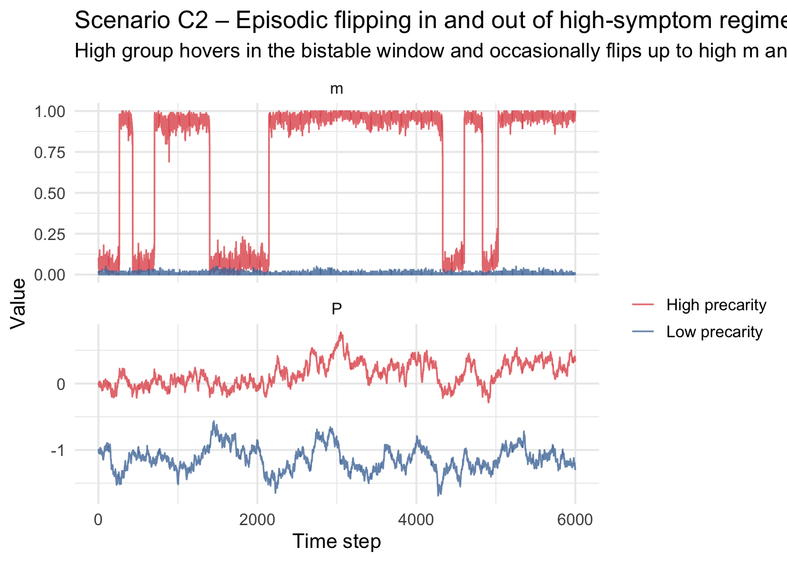
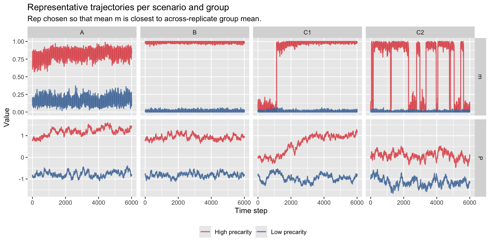
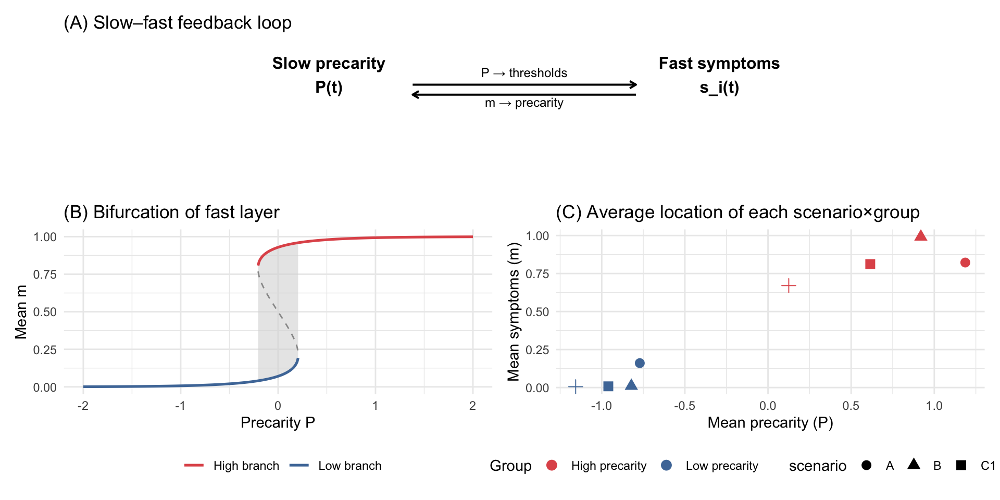

Mental health symptoms fluctuate on fast time scales (hours–days), while socio-economic pressures such as financial precarity, discrimination, or workload change more slowly (months–years). Standard symptom-network models:
treat symptoms as a closed system,
interpret group differences in network structure as internal differences.
Here we explicitly couple:
a fast 0/1 Curie–Weiss symptom layer (binary symptoms with mean-field interaction),
a slow precarity variable (\(P_t\)) that drifts gradually,
feedback from symptoms back into precarity.
We show how group differences in symptom trajectories can arise purely from:
different precarity baselines and
different feedback strengths,
with identical fast-layer parameters.
We examine:
Scenario A: Weakly nonlinear fast layer (no bistability).
Scenario B: Strongly nonlinear fast layer with bistability; precarity almost fixed around different baselines.
Scenario C1: Same bistable fast layer + strong two-way feedback → catastrophic drift into high-symptom regime.
Scenario C2: Same bistable fast layer + moderate feedback + noise → episodic flipping in and out of high-symptom regime.
For large enough \(\beta J\) (specifically \(\beta J > 4\)) this mean-field system is bistable for an intermediate range of \(P\).
Code
# One fast update block for 0/1 Curie–Weiss Ising layer# s in {0,1}; P is current precarityising_fast_step01 <-function( P, s,beta =1.0,J =1.0,h0 =0.0,gammaP =0.5,sweeps =30){ n <-length(s) # spins in {0,1}for (sw inseq_len(sweeps)) { m <-mean(s) # mean activation in [0,1]# field for this mean-field model H <- J * (m -0.5) + h0 + gammaP * P p <-inv_logit(beta * H)# update spinsfor (u inseq_len(n)) { i <-sample.int(n, 1) s[i] <-rbinom(1, 1, p) } } s}
3. Slow layer: precarity dynamics
The slow variable \(P_t\) evolves with:
mean reversion to group-specific baseline \(P_{\text{base}}\),
feedback from symptoms through a slowly evolving average \(m_{\text{slow}}\),
Fast layer: low coupling → βJ < 4 → no bistability.
Slow layer: moderate mean reversion.
Groups only differ in \(P_{base}\).
Mechanics: The Curie–Weiss activation function is shallow and unimodal. For any value of precarity \(P_t\), the fast layer quickly relaxes to a single equilibrium \(m^*(P)\).
Slow layer: strong mean reversion (\(κ\) large) → \(P\) remains near its baseline.
Groups differ only in \(P_{\text{base}}\).
Mechanics: Because the fast layer is bistable, the bifurcation diagram contains two stable branches:
low-symptom attractor \(m_{\text{low}}(P)\)
high-symptom attractor \(m_{\text{high}}(P)\)
If a group’s baseline precarity lies:
below the bistable window → they fall into the low-m basin
above the bistable window → they fall into the high-m basin
But because \(κ\) is large, each group’s \(P_t\) barely moves from its baseline — they remain “locked” on their respective branches.
Code
par_fast_B <-list(n_nodes =100,sweeps =40,beta = beta_BC,J = J_BC,h0 = h0_BC,gammaP = gammaP_BC)par_slow_B <-list(dt =0.02,kappa =0.50, # strong mean reversionb =0.08, # weak symptom → P feedbackm_star =0.10,sigmaP =0.10,lambda_m =0.001)P_bases_B <-c(P_low_fold -0.6, P_high_fold +0.6)sim_B <-run_scenario_parallel(par_fast = par_fast_B,par_slow = par_slow_B,P_bases = P_bases_B,labels = labels_2,T_steps =3000,seeds =c(3, 4)) %>%mutate(scenario ="B")sim_B_long <- sim_B %>%select(t, P, m, group) %>%pivot_longer(c(P, m),names_to ="variable",values_to ="value")ggplot(sim_B_long, aes(t, value, colour = group)) +geom_line(alpha =0.8, linewidth =0.5) +facet_wrap(~ variable, scales ="free_y", ncol =1) +scale_color_manual(values =c("Low precarity"="#4E79A7","High precarity"="#E15759")) +labs(title ="Scenario B – Bistable fast layer, P nearly fixed",subtitle ="Low group in low-m branch, high group in high-m branch of the same fast network.",x ="Time step", y ="Value", colour ="" )
Interpretation:
Even though both groups share the same symptom network, they occupy different stable symptom equilibria.
The difference is not in the network, but in where slow external conditions place the system on the bifurcation diagram.
This is the tipping-point explanation of group differences: Small differences in slow socioeconomic conditions push groups into different attractors of the same symptom system.
Simulation output:
Two flat symptom trajectories: one low, one high.
No switching or noise-driven episodes.
A clean demonstration of structural separation due to slow baselines.
8. Scenario C – Bistability + strong two-way feedback
We keep the same bistable fast layer (par_fast_B) but weaken mean reversion and/or increase feedback and noise so that \(P_t\) can wander through the bistable region.
We consider:
C1: Catastrophic drift into high-symptom regime.
C2: Episodic flipping in and out of the high-symptom basin.
8.1 Scenario C1 – Catastrophic flip
Parameter setting:
Same bistable fast layer as Scenario B.
Slow layer:
weak mean reversion (\(κ\) small)
strong symptom feedback (\(b\) large)
low noise
Mechanics:
Here \(P_t\) can drift far from \(P_{\text{base}}\). If symptoms rise slightly, strong feedback pushes precarity upward:
\[
m_{\text{slow}} \uparrow \quad\Rightarrow\quad P \uparrow.
\]
This, in turn, shifts the fast layer’s field upward, which increases m — creating a positive feedback loop.
If \(P\) crosses the upper fold of the bifurcation diagram, the low-m state disappears and the system collapses into the high-symptom branch (“catastrophe”).
Code
par_fast_C <- par_fast_B # same bistable fast layer as Scenario B# C1: weak pullback, strong positive feedback, moderate noisepar_slow_C1 <-list(dt =0.02,kappa =0.20,b =0.25,m_star =0.15,sigmaP =0.10,lambda_m =0.001)P_bases_C1 <-c(P_low_fold -0.6, (P_low_fold + P_high_fold)/2)sim_C1 <-run_scenario_parallel(par_fast = par_fast_C,par_slow = par_slow_C1,P_bases = P_bases_C1,labels = labels_2,T_steps =5000,seeds =c(21, 22)) %>%mutate(scenario ="C1")sim_C1_long <- sim_C1 %>%select(t, P, m, group) %>%pivot_longer(c(P, m),names_to ="variable",values_to ="value")ggplot(sim_C1_long, aes(t, value, colour = group)) +geom_line(alpha =0.8, linewidth =0.5) +facet_wrap(~ variable, scales ="free_y", ncol =1) +scale_color_manual(values =c("Low precarity"="#4E79A7","High precarity"="#E15759")) +labs(title ="Scenario C1 – Catastrophic drift into high-symptom regime",subtitle ="Low group remains in low-m region; high group is pushed above the upper fold and stays high-m.",x ="Time step", y ="Value", colour ="" )
*Interpretation:
A group with moderately elevated precarity can experience runaway escalation into a chronic high-symptom regime.
Once the upper basin is entered, symptoms remain persistently high.
This demonstrates a mechanistic route to chronicity under high precarity + high feedback.
Simulation output:
Low group stays stable.
High group shows a sharp transition into the high \(m\) basin and remains there.
\(P\) fluctuates near the bistable region, occasionally being nudged above or below fold points by noise. Crossing a fold forces the system into the opposite symptom branch:
Because \(κ\) is stronger here, P often drifts back, allowing repeated entries and exits from the high-symptom basin.
Code
# C2: episodic flipping – equilibria for low/high m sit inside the bistable windowpar_slow_C2 <-list(dt =0.02,kappa =0.30, # stronger pullback than C1b =0.15, # weaker symptom -> P feedbackm_star =0.30, # symptoms have to be quite high to push P up a lotsigmaP =0.15, # fairly big noise so P can cross foldslambda_m =0.001)P_bases_C2 <-c(P_low_fold -0.8, (P_low_fold + P_high_fold)/2)sim_C2 <-run_scenario_parallel(par_fast = par_fast_C,par_slow = par_slow_C2,P_bases = P_bases_C2,labels = labels_2,T_steps =6000,seeds =c(31, 32)) %>%mutate(scenario ="C2")sim_C2_long <- sim_C2 %>%select(t, P, m, group) %>%pivot_longer(c(P, m),names_to ="variable",values_to ="value")ggplot(sim_C2_long, aes(t, value, colour = group)) +geom_line(alpha =0.8, linewidth =0.5) +facet_wrap(~ variable, scales ="free_y", ncol =1) +scale_color_manual(values =c("Low precarity"="#4E79A7","High precarity"="#E15759")) +labs(title ="Scenario C2 – Episodic flipping in and out of high-symptom regime",subtitle ="High group hovers in the bistable window and occasionally flips up to high m and back down.",x ="Time step", y ="Value", colour ="" )

9. Multi-replicate simulations (A, B, C1, C2)
Now we run multiple stochastic replicates per scenario and group to see how robust the qualitative behaviour is.
We now choose one representative replicate per scenario × group. We define “representative” as: mean \(m\) over time closest to the group’s average across all replicates.
Code
rep_scores <- sim_reps_all %>%group_by(scenario, group, rep) %>%summarise(m_mean =mean(m),.groups ="drop" )rep_targets <- rep_scores %>%group_by(scenario, group) %>%mutate(global_mean =mean(m_mean)) %>%slice_min(abs(m_mean - global_mean), n =1, with_ties =FALSE) %>%ungroup()rep_representative <- sim_reps_all %>%inner_join(rep_targets, by =c("scenario", "group", "rep"))rep_long <- rep_representative %>%select(scenario, group, t, P, m) %>%pivot_longer(c(P, m), names_to ="variable", values_to ="value")ggplot(rep_long, aes(t, value, colour = group)) +geom_line(alpha =0.85, linewidth =0.7) +facet_grid(variable ~ scenario, scales ="free_y") +scale_color_manual(values =c("Low precarity"="#4E79A7","High precarity"="#E15759"),name ="") +labs(title ="Representative trajectories per scenario and group",subtitle ="Rep chosen so that mean m is closest to across-replicate group mean.",x ="Time step", y ="Value" ) +theme(legend.position ="bottom")

These are good candidates for the main time-series figures in the paper.
11. Graphical abstract
We build a 3-panel graphical abstract:
(A) Conceptual slow–fast feedback.
(B) Bifurcation structure of the fast layer.
(C) Mean \((P, m)\) locations of each scenario × group.
Code
## Panel A: conceptual diagram (slow–fast feedback)panel_A <-ggplot() +xlim(0, 3) +ylim(0, 3) +annotate("text", x =0.8, y =2.3,label ="Slow precarity\nP(t)", size =4.2, fontface ="bold") +annotate("text", x =2.2, y =2.3,label ="Fast symptoms\ns_i(t)", size =4.2, fontface ="bold") +annotate("segment",x =1.1, y =2.1, xend =1.9, yend =2.1,arrow =arrow(length =unit(0.18, "cm")), linewidth =0.7) +annotate("segment",x =1.9, y =1.9, xend =1.1, yend =1.9,arrow =arrow(length =unit(0.18, "cm")), linewidth =0.7) +annotate("text", x =1.5, y =2.35,label ="P → thresholds", size =3.2) +annotate("text", x =1.5, y =1.75,label ="m → precarity", size =3.2) +theme_void() +labs(title ="(A) Slow–fast feedback loop")## Panel B: bifurcation diagram (reuse bf_BC)panel_B <-ggplot() + {if (nrow(bistable_window) >0)geom_ribbon(data = bistable_window,aes(x = P, ymin = m_low, ymax = m_high),fill ="grey85", alpha =0.6 ) } +geom_line(data = bf_BC %>%filter(!stable),aes(P, m),linetype ="dashed", colour ="grey60" ) +geom_line(data = bf_BC %>%filter(stable, m <0.5),aes(P, m, colour ="Low branch"),linewidth =0.9 ) +geom_line(data = bf_BC %>%filter(stable, m >=0.5),aes(P, m, colour ="High branch"),linewidth =0.9 ) +scale_color_manual(values =c("Low branch"="#4E79A7","High branch"="#E15759"),name ="") +labs(title ="(B) Bifurcation of fast layer",x ="Precarity P", y ="Mean m" ) +theme_minimal(base_size =11) +theme(legend.position ="bottom")## Panel C: scenario × group mean locations in (P, m)scenario_means <- sim_reps_all %>%group_by(scenario, group) %>%summarise(P_mean =mean(P),m_mean =mean(m),.groups ="drop" )panel_C <-ggplot(scenario_means,aes(P_mean, m_mean, colour = group, shape = scenario)) +geom_point(size =3) +scale_color_manual(values =c("Low precarity"="#4E79A7","High precarity"="#E15759"),name ="Group") +labs(title ="(C) Average location of each scenario×group",x ="Mean precarity (P)",y ="Mean symptoms (m)" ) +theme_minimal(base_size =11) +theme(legend.position ="bottom")# Combine panels using patchworkpanel_A / (panel_B | panel_C)

12. HELIUS Application — Data-Driven Calibration of the Curie–Weiss Slow–Fast Model
This section demonstrates how group differences in HELIUS symptoms (e.g., Dutch vs non-Dutch) can be reproduced using the data-calibrated Curie–Weiss slow–fast model.
We proceed in four steps:
Clean HELIUS and construct:
a precarity index \(zP\)
binary symptoms for the fast layer
Estimate Curie–Weiss parameters from the symptom covariance:
effective slope \(\beta J\)
external field offset \(h_0\)
Place empirical group means onto the empirical bifurcation diagram
Calibrate the slow layer so that the simulated ΔP and Δm
match HELIUS ΔP and Δm.
Primary demonstration: Ethnicity (Dutch vs NonDutch)
Other groupings (Education, Gender, Age) can be swapped with a single line.
set.seed(1)sim_HELIUS <-run_scenario_parallel(par_fast = par_fast_H,par_slow = par_slow_H,P_bases = P_bases_H,labels = labels_H,T_steps =5000,seeds =c(123, 456) # two groups → two seeds)sim_H_long <- sim_HELIUS %>%select(t, P, m, group) %>%pivot_longer(c(P, m), names_to ="variable", values_to ="value")sim_H_long %>%head()
# A tibble: 6 × 4
t group variable value
<int> <chr> <chr> <dbl>
1 1 Dutch P -0.427
2 1 Dutch m 0.04
3 2 Dutch P -0.531
4 2 Dutch m 0.14
5 3 Dutch P -0.495
6 3 Dutch m 0.17